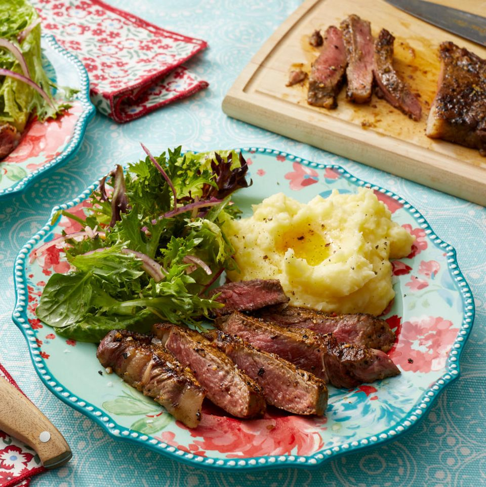

Thin Ribeye

Description
You just really can’t ever know the wonder of this beauty until you prepare it in your own kitchen.
Serve this baby up right next to a heaping pile of roasted garlic mashed potatoes and a salad,
and your sweetie (or friend or family) will love you for it. We’ve roasted the garlic. We’ve made
the roasted garlic mashed potatoes. Now, it’s time to answer the question of the day: Where’s the beef?
Let’s get started, shall we?
Ingredients
- 1 tbsp. Lawry's seasoning salt
- 3 tbsp. lemon and pepper seasoning
- 1 tsp. kosher salt
- Freshly ground black pepper, to taste
- 2 pieces (about 8 ounces each) ribeye steak
- 1 tbsp. olive oil
- 1 tbsp. butter
Steps
- Combine the seasoning salt, lemon and pepper seasoning and kosher salt together in a small bowl. Add lots of black pepper, to taste, and mix to create a rub for your steaks.
- Sprinkle some of the rub on one side of the steaks and rub it all over, then flip and rub the remaining seasoning all over the steaks.
- Bring a skillet to medium heat. Once hot, add the olive oil and butter. Cook until the oil is hot and the butter is beginning to brown. With tongs, set the steaks right into the sizzling butter/oil mixture.
- Cook for about 2 minutes on the first side, then flip and turn the heat down to a medium-low to finish off the cooking. Cooking it for about 2 ½ minutes on the second side will result in a medium-rare piece of meat. Alter your cooking time a little to achieve a steak that is a little less pink in the center.
- Let the steaks rest for a couple minutes before digging in or slice the steaks for a nice presentation and drizzle with the leftover pan sauce from the bottom of the skillet. Serve with mashed potatoes and a side salad.